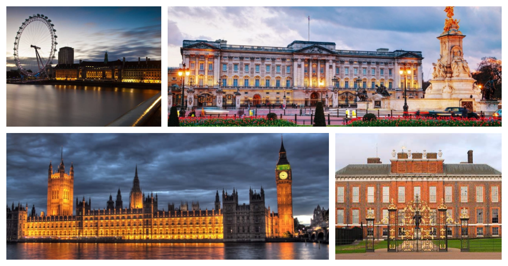

londres
Londres, a capital do Reino Unido, é uma metrópole que mescla história e modernidade de maneira envolvente. O icônico Big Ben e o Palácio de Buckingham personificam a realeza britânica, enquanto a Torre de Londres revela séculos de história. A movimentada Trafalgar Square e a vibrante Oxford Street são destinos para compras e cultura. Os museus mundialmente famosos, como o British Museum e a Tate Modern, enriquecem a experiência cultural. Cruzeiros ao longo do Rio Tâmisa oferecem vistas panorâmicas, e o Parque Hyde Park proporciona um refúgio verdejante. Londres é uma cidade cosmopolita que abraça tradição e inovação, convidando os visitantes a explorar suas diversas facetas.
